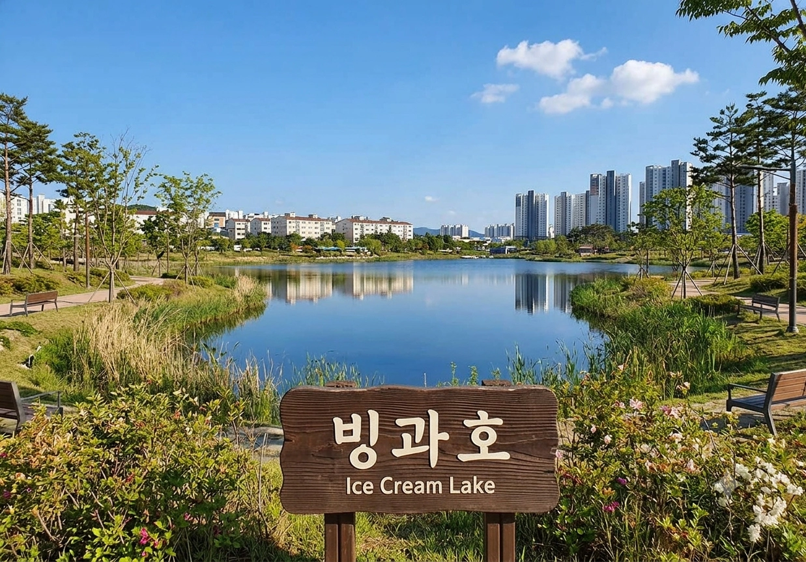

최근 수정 시각: 2026-06-20 18:05:44
빙과호
氷菓湖 / Binggwa Lake

| 국가 |
대한민국 |
| 소재지 |
효빈광역시 탄성군 흑택면 루비리
(아이스크림 공원 내) |
| 형성 |
1920년대 (농업용 흑택저수지로 축조)
2011년 5월 8일 (현재의 생태호수로 재개장) |
| 담수 면적 |
약 45,000㎡ |
| 평균 수심 |
1.5m ~ 최대 3.0m |
| 수질 |
1급수 (나노 버블 생태 정화 공법 적용) |
| 관리·운영 |
효빈광역시 탄성군청 공원녹지과 수변관리팀 |
| 상징 캐릭터 |
쿠로사와 루비 (러브 라이브! 선샤인!!) |
| 테마곡 |
愛♡スクリ～ム！(아이♡스크림!) |
| 연계 교통 |
5호선 루비역 2번 출구 도보 3분
(공원 진입 후 중앙) |
"호수 전체가 거대한 아이스크림 그 자체! 흑택면을 촉촉하고 달콤하게 적시는 핑크빛 오아시스."
"한겨울 얼어붙은 수면 위에서 삐기족들의 익룡 샤우팅이 울려 퍼지는 1급수 생태의 기적."
1. 개요
효빈광역시 탄성군 흑택면 루비리의 랜드마크인 '아이스크림 공원' 정중앙에 위치한 거대한 생태 호수. 전체 공원 면적의 약 30%를 차지하는 핵심 수자원이자, 루비지구 신도시 주민들의 완벽한 휴식처다.
원래는 평범한 농업용 저수지였으나, 행정구역 명칭(흑택면 루비리)과 호수 이름(빙과)이 절묘한 시너지 효과를 일으키며 전 세계 서브컬처 팬덤과 삐기족(루비 팬덤)의 절대적인 숭배를 받는 '아이스크림 성지'로 거듭났다. 이쯤 되면 단순한 공원이 아니라 종교 시설이다. 주말이면 호숫가 데크에 걸터앉아 고구마 타르트와 아이스크림을 먹는 오타쿠들과 나들이 온 신도시 가족들이 완벽한 조화를 이루는 평화롭고 기괴한(?) 풍경을 자랑한다.
2. 역사: 흙먼지 날리던 저수지에서 기적의 호수로
- 구한말~2000년대 초반 (흑택저수지 시절): 본래 이름은 '흑택저수지'. 탄성군 흑택면과 소원면 일대의 드넓은 벼농사를 책임지던 농업용수 공급원이었으며, 물이 탁하고 퀴퀴한 흙냄새가 진동하는 전형적인 시골 낚시터 느낌의 저수지였다.
- 2008년 개발 위기: 흑택루비지구 대규모 택지개발이 시작되면서, 탐욕에 눈이 먼 건설사들과 LH는 이 저수지를 흙으로 싹 다 메워버리고 아파트를 수십 동 더 올리겠다는 '저수지 매립 계획'을 제출했다.
신도시 아파트 분양권에 미쳐있던 투기꾼들도 대찬성했다.
- 박현만 시장의 철퇴: 하지만 당시 대중교통과 녹지 인프라에 병적으로 집착하던 박현만 전 시장이 "호수를 메우고 아파트를 짓는 것은 도시의 허파에 시멘트를 붓는 짓이다! 일산호수공원의 성공을 보라!"라며 책상을 내리치고 매립안을 전면 백지화시켰다.
당시 매립을 계획했던 건설사들은 피눈물을 흘렸다 카더라.
- 2011년 5월 8일: 3년간의 대대적인 호수 바닥 준설과 생태 복원 공사를 거쳐, 물고기가 뛰놀고 수련이 피어나는 현재의 맑고 아름다운 '빙과호'로 대중 앞에 화려하게 부활했다.
3. 명칭의 유래: 빙과(氷菓) 유니버스
원래 이 호수의 옛 별명은 조선시대 얼음을 캐서 나라에 바쳤다는 설화에서 유래한 '빙과지(氷菓池)'였다. 그런데 이 묘하게 근본 없는 별명이 쿠로사와 루비가 참여한 전설의 유닛 곡 <愛♡スクリ～ム！(아이♡스크림!)>과 충돌하면서 거대한 유니버스가 완성되었다.
빙과 = 아이스크림: 호수 이름을 그대로 풀이하면 '아이스크림 호수'가 된다. 루비리(루비)에 있는 아이스크림 호수(빙과호)라니, 덕후들 입장에서는 "루비가 1920년대 효빈시 도시계획에 영혼으로 관여했다"는 킹리적 갓심을 품을 수밖에 없는 완벽한 네이밍이다.
이를 계기로 지자체에서도 물 들어올 때 노를 젓겠다며 아예 공원 이름마저 '루비호수생태공원'에서 '아이스크림 공원'으로 공식 변경해 버리는 광기를 보여주었다. 군청 공무원 중 진성 럽라이버가 있다는 합리적 의심이 든다.
4. 생태 및 수질 관리 (광기의 1급수)
여느 신도시 인공호수들이 여름만 되면 녹조 라떼로 변해 악취를 풍기는 것과 달리, 빙과호는 대한민국 수질 관리의 마스터피스로 불린다.
- 나노 버블 생태 공법: 효빈시가 막대한 예산을 쏟아부어 호수 바닥 곳곳에 나노 버블 발생기를 설치했다. 화학 약품을 전혀 쓰지 않고 미세 기포로 용존산소량을 극대화하여, 한여름 폭염에도 녹조가 생기지 않는 기적의 1급수 수질을 유지한다.
- 토종 민물 생태계: 배스나 블루길 같은 외래종 낚시꾼이 출몰하면 삐기족들이 즉각 군청에 신고하여 생태계를 사수한다.
외래종보다 삐기족이 더 무섭다. 현재 호수에는 팔뚝만 한 토종 잉어 떼와 가물치, 그리고 청둥오리들이 평화롭게 공존하고 있다. 특히 수변 데크 쪽에 사람이 다가가면 잉어 떼가 밥을 달라고 수백 마리씩 몰려드는 징그러우면서도 장엄한 장관이 연출된다.
5. 호수 주변 주요 스팟
호수 둘레를 따라 약 2.5km의 푹신한 우레탄 산책로가 조성되어 있다.
- 간바루비 수변 데크: 호수 남쪽, 루비역 방향과 가장 가까운 메인 데크. 대형 핑크빛 메가폰 조형물이 세워져 있으며, 탁 트인 호수 전경을 배경으로 인증샷을 찍기 가장 좋은 핫스팟이다.
- 시키의 매드 사이언스 바닥분수: 호수 북쪽 산책로에 위치. <아이♡스크림!>에 참여한 와카나 시키의 기믹을 살려 과학 실험용 플라스크 모양으로 설계되었다. 여름철 미스트가 뿜어져 나올 때 호수의 물안개와 섞여 묘한 매드 사이언티스트 연구소 같은 스산한(?) 분위기를 연출한다.
- 아유무의 토끼섬 (인공섬): 빙과호 정중앙에 떠 있는 접근 불가 생태 보호 구역. <아이♡스크림!>의 멤버인 우에하라 아유무를 상징하듯, 위에서 내려다보면 묘하게 웅크린 토끼 모양을 하고 있다. 각종 철새들과 오리들의 프라이빗한 휴식처다.
밤마다 섬에서 깡총깡총 소리가 들린다는 괴담이 있다.
6. 사건 사고 및 전설의 일화
-
① 윤재훈의 '민초 카르텔' 빙과호 오염 미수 사건 (2023. 08)
오타쿠 혐오 빌런 윤재훈이 "이 공원에는 민트초코가 부족하다"며 빙과호 수질을 오염시키기 위해 갤런 단위의 민트초코 아이스크림 녹은 물과 오물을 수변 데크에서 투척하려던 사건.
잠입해 있던 체중 100kg의 공원 정비 직원(진성 쿠로사와 루비 오시)이 윤재훈의 목덜미를 낚아채며 헤드락을 걸었고, "우리 리틀데몬 4호의 호수를 더럽히면 네놈의 척추를 만마루처럼 접어버리겠다"라고 사자후를 날려 완벽하게 제압했다. 윤재훈은 바지에 지린 채로 파출소로 인계되었고, 빙과호의 수질은 안전하게 지켜졌다. 당연하지만 바지 세탁비는 본인 부담이었다.
-
② 빙과호 결빙과 익룡 떼창 사건 (2024. 01)
기록적인 역대급 한파로 빙과호가 약 20cm 두께로 꽝꽝 얼어붙었던 날 발생한 촌극.
얼어붙은 호수를 캔버스 삼아 수백 명의 삐기족들이 얼음 위로 진격해, 동그랗게 원을 그리고 <元気全開DAY! DAY! DAY!>를 틀어놓고 단체로 익룡 샤우팅 파트(삐기잇-!)를 질러대는 광기의 춤판을 벌였다.
결국 빙판 붕괴를 우려한 탄성군청 공무원들이 확성기를 들고 "얼음 깨져서 입수하면 그건 아이스크림이 아니라 동태다, 이 바보들아!"라며 혼비백산하여 덕후들을 쫓아내며 일단락되었다. 만약 진짜 얼음이 깨졌으면 9시 뉴스 감이었다.
7. 여담
-
CU 루비공원점의 매출 기적: 빙과호 뷰를 끼고 있는 공원 내 매점은 여름철 아이스크림 매출이 전국 편의점 최상위권을 찍는다. 특히 호수 앞에서 베스킨라빈스 싱글 레귤러나 대형 츄파춥스를 들고 호수를 배경으로 인증샷을 찍는 것이 국룰 코스라, 매대 절반이 막대사탕과 아이스크림으로 채워져 있다.
-
비가 부슬부슬 내리는 새벽이나 일교차가 큰 가을 아침에는 빙과호 수면에 짙은 물안개가 깔리는데, 이때 호숫가를 걷다 보면 마치 이세계나 환일의 요하네 속 누마즈에 들어온 것 같은 환상적인 분위기를 뿜어낸다.
물안개 속에서 요하네가 튀어나올 것 같다.
-
인근 루비지구 14~18블럭 고층 아파트 거주민들의 가장 큰 프라이드가 바로 거실 창문으로 이 '빙과호 파노라마 뷰'가 보인다는 점이다. 호수 조망권이 확보된 세대는 그렇지 않은 세대보다 호가가 수천만 원 이상 높게 형성되는 일명 '아이스크림 프리미엄'을 누리고 있다.
검색어를 입력해주세요.